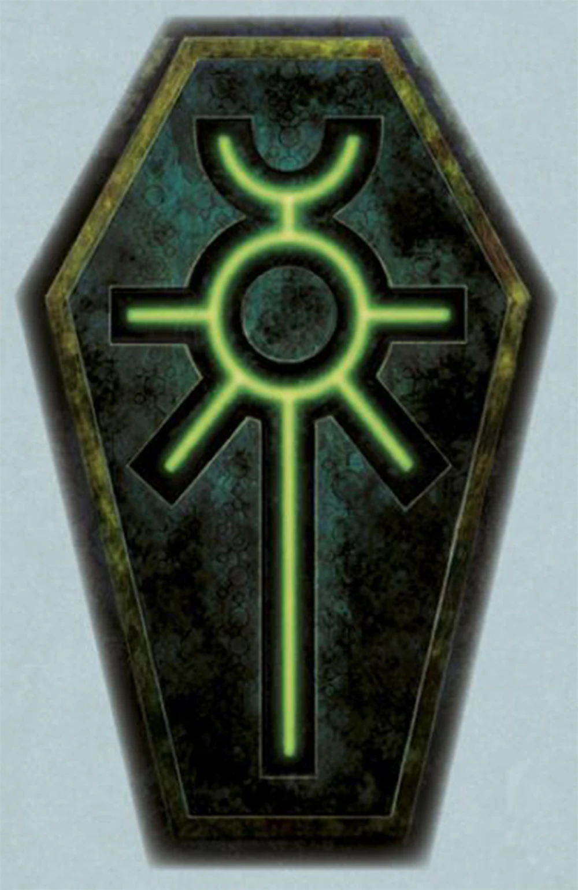
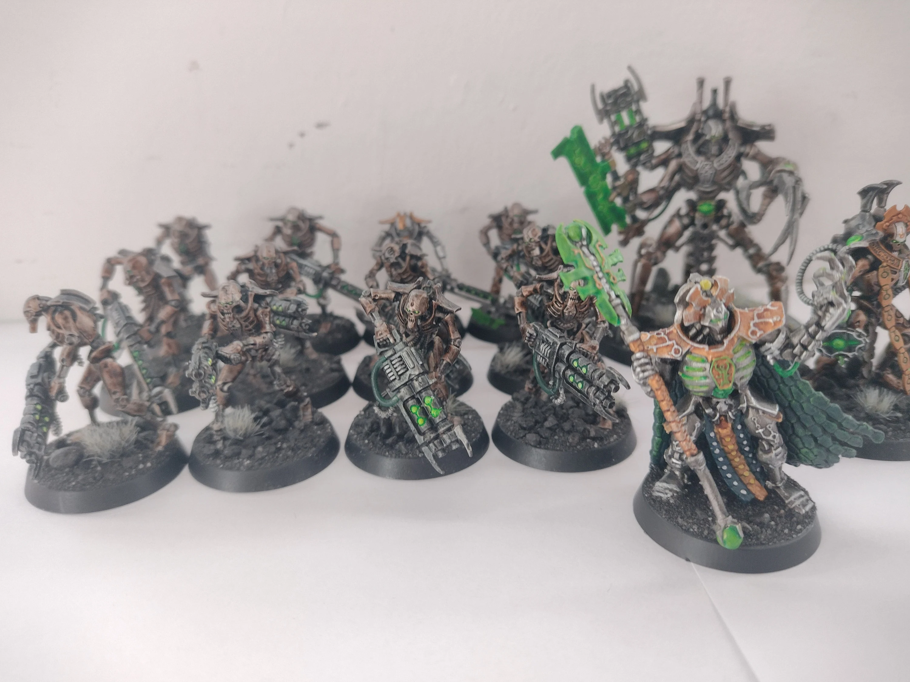

Necrones
El Ankh

Los Necrones son una misteriosa especie xenos de guerreros esqueléticos robóticos humanoides que han permanecido inactivos en sus tumbas de estasis durante más de 60 millones de años terrestres, aunque por fin han comenzado a despertar. Son las creaciones sin alma, antiguos sirvientes y ahora captores de los antiguos C'tan, los terribles Dioses de las Estrellas del mito Aeldari.
Los Necrones son increíblemente antiguos, incluso anteriores al nacimiento de los Aeldari. Sin embargo, por fin están empezando a despertar de sus Mundos Tumba, porque la galaxia está madura para la conquista y la restauración del Imperio Necrón desde la desaparición de los Ancestrales hace más de 60 millones de años estándar.
Los Necrones son una especie humanoide completamente robótica cuya destreza tecnológica probablemente no sea igualada por ninguna de las otras especies inteligentes de la galaxia. Sin embargo, por un deseo de venganza contra los antiguos xenos más afortunados y longevos llamados los Antiguos, y por el engaño de las inteligencias divinas conocidas como los C'tan, los Necrones se despojaron de sus formas orgánicas originales y perdieron todas las formas de compasión y empatía.
En cambio, se han convertido en máquinas de matar despiadadas e inmortales que están decididas a ejercer su dominio sobre la galaxia una vez más. En toda la galaxia, esta antigua y terrible especie está volviendo a la vida. Enterrados en criptas de estasis durante millones de años terrestres, han dormido durante eones, esperando que la galaxia se recupere de las heridas de una guerra larga y sangrienta.
Ahora, después de sesenta millones de años estándar de inactividad, comienza un gran propósito. En mundos desolados que se creían desprovistos de toda vida durante mucho tiempo, antiguas maquinarias despiertan con un propósito sombrío, comenzando el lento proceso de revivificación que liberará a aquellos sepultados en su interior para caminar a través de las estrellas una vez más. Las imparables e inmortales legiones Necronas están aumentando. Que la galaxia tenga cuidado.
Todos los Necrones, desde los guerreros más humildes hasta los señores más majestuosos, están impulsados por un objetivo final: restaurar la gloria de sus antiguas dinastías gobernantes y poner la galaxia bajo su dominio una vez más, como lo fue en la antigüedad.
Soldado Necrón
Escuadra de Necrones
